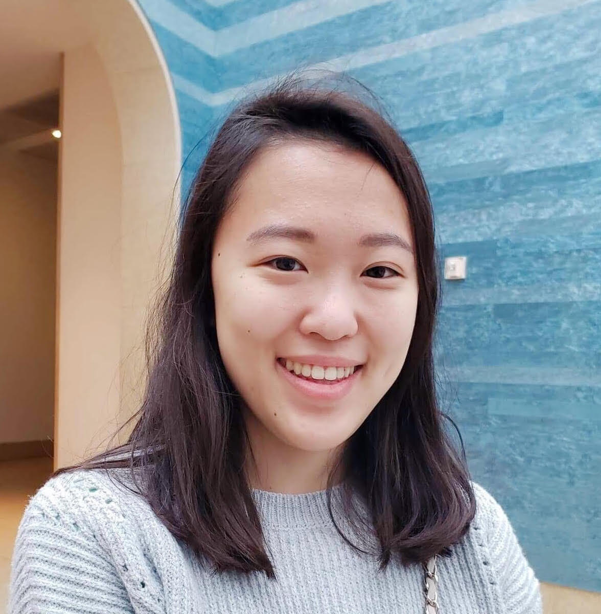

Alyssa Bernadette Cahoy, President Sid Richardson College '23 Health Sciences,
English Majors Medical Humanities Minor alyssa.cahoy@rice.edu
Hello everyone, I'm thrilled to be your 2021-2022 Medical Humanities Club president! I love the Medical
Humanities field because it takes an integrative approach to re-humanizing medical education and clinical
practice. As humans, we have stakes in our own health, hopes, and joys. We breathe a sigh of relief when we
receive a favorable prognosis; we brace ourselves when our loved ones suffer from debilitating diseases. Medical
Humanities frameworks allow us to examine the human condition at large, to investigate how the experience of
illness is molded by social milieu. I hope our club serves as an unconventional, yet enriching avenue for you to
develop a more expansive understanding of healthcare, as it has for me and the other officers. I'm greatly looking
forward to the upcoming year!
Sally Yan, Internal VP McMurtry College '22 Biosciences Major Medical Humanities,
Global Health Technologies Minors sally.m.yan@rice.edu
My name is Sally Yan, and I am a senior at McMurtry College majoring in Biosciences and minoring in Medical
Humanities and Global Health Technologies. I care deeply about the Medical Humanities because it offers an
opportunity to look at medicine from so many different dimensions beyond the rigid scope of science and even to
critically examine the conventional frameworks of science and medicine. I love that this club brings together
students who also have this conviction. I want to help continue to maintain and grow this amazing club and give
other students at Rice an opportunity to also explore medicine from these perspectives! I’ve been highly involved
in the MedHum club since my freshman year and have served as the Symposium Chair then the IVP. This year, as we
return to normalcy, I’m excited to bring back and expand some of our club’s favorite interactive events and
activities!
Shreyas Karki, External VP Brown College '22 English Major Biochemistry, Cell
Biology Minors shreyaskarki@rice.edu
I believe in Medical Humanities because I believe our current health-care system needs a significant revamp to
become more humane and people-focused. Science is useful for curing the body, but to truly heal, we have to look
beyond the sciences, as a disease isn't just a physical ailment... it's psychological, social, economic, and
spiritual. As a former patient—and as a premedical student—I appreciate all of the doctors that are able to look
beyond textbooks to better advocate for their patients. I hope, as the External Vice President, I can connect Rice
University's club to the greater cultural discourse of Medical Humanities.
Annika Nambiar, Secretary McMurtry College '22 Biosciences Major Medical
Humanities Minor annika.nambiar@rice.edu
My name is Annika Nambiar and I'll be this year's Secretary! I am a junior majoring in Biochemistry and Cell
Biology and minoring in the Medical Humanities. MedHum has allowed me to critically think about the work I want to
be doing in the future as a physician. I hope that by attending our events you can see how it can change your
perspective too! I am excited to work closely with the MedHum team and provide reliable and fast communication!
Aishani Gargapati, Treasurer Wiess College '24 Biosciences Major Medical
Humanities Minor aishani.s.gargapati@rice.edu
My name is Aishani Gargapati, and I am excited to be this year’s Treasurer! I am a sophomore from Wiess College.
I had an amazing experience serving as the Fundraising Chair of the Rice Medical Humanities Club in my freshman
year. This past year, I have deepened my passion for the medical humanities and have enjoyed learning about
fascinating topics, such as the social construction of illness, health disparities, the healthcare
provider-patient relationship, and the history of medicine. I am excited to organize our club budget and funds,
help plan for events, and connect with club members throughout the year and beyond!
Arnav Sankaranthi, Symposium Chair Brown College '23 Biosciences Major Medical
Humanities Minor arnav@rice.edu
Emma Saving, Coffee Chats Chair Sid Richardson College '23 Biosciences Major
Medical Humanities Minor emma.e.saving@rice.edu
Ashna Karpe, Publicity Chair Duncan College '23 Psychological Sciences
Major Biochemistry and Cell Biology Minor ashna.s.karpe@rice.edu
Sumin Choi, Historian Brown College '23 Biochemistry, Cell Biology
Majors Medical Humanities Minor sumin.m.choi@rice.edu

Molly Kyles, Outreach Chair Lovett College '24 Natural Sciences Division (Undecided)
Medical Humanities Minor molly.j.kyles@rice.edu
Alekhya Gurram, Socials Chair Will Rice College '23 Health Sciences, Spanish &
Portugese Majors Medical Humanities Minor alekhya.gurram@rice.edu
Mabel Tang, College Rep Chair Hanszen College '23 Biochemistry and Cell Biology Major
Medical Humanities Minor mabel.s.tang@rice.edu